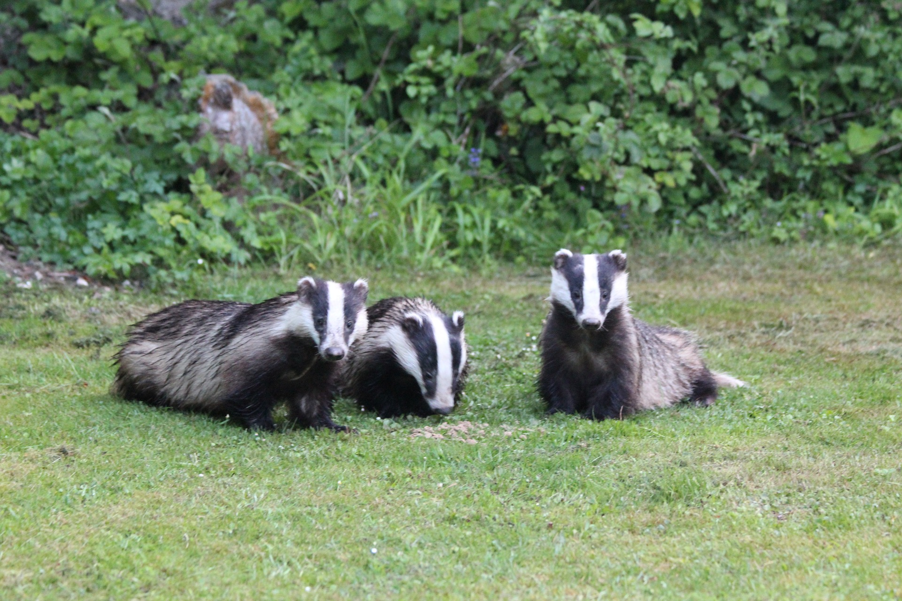

Powrót
Czas życia borsuków
Przeciętny czas życia borsuków wynosi około 7-10 lat.
Niektóre osobniki mogą dożyć nawet 15 lat.
Czynniki takie jak dostępność pożywienia, siedlisko i obecność drapieżników mogą wpływać na długość życia borsuków.
